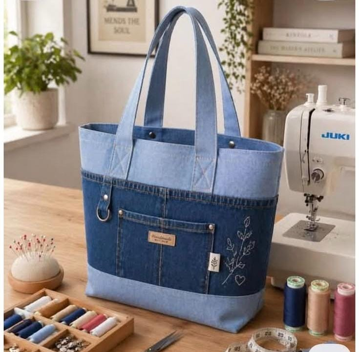
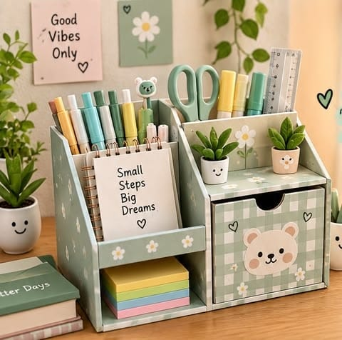
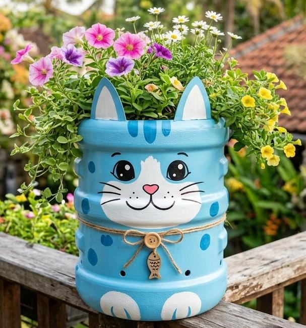

Produk Kami
Ide sederhana, dampak nyata. Kenali karya yang lahir dari proses belajar dan kepedulian terhadap lingkungan.

Lampu Motherboard dan HDD
Kreasi unik lampu belajar dari motherboard dan hardisk bekas yang bergaya dan ramah lingkungan.
Lihat detail ↗

Lukisan Tutup Botol
Kreasi lukisan dari tutup botol bekas dengan sentuhan daur ulang.
Lihat detail ↗

Pot Bunga Dari Galon
Kreativitas tangan dari galon bekas menjadi pot bunga
Lihat detail ↗
Jam dari Kardus
Kreativitas tangan dari kardus bekas menjadi jam dinding
Lihat detail ↗